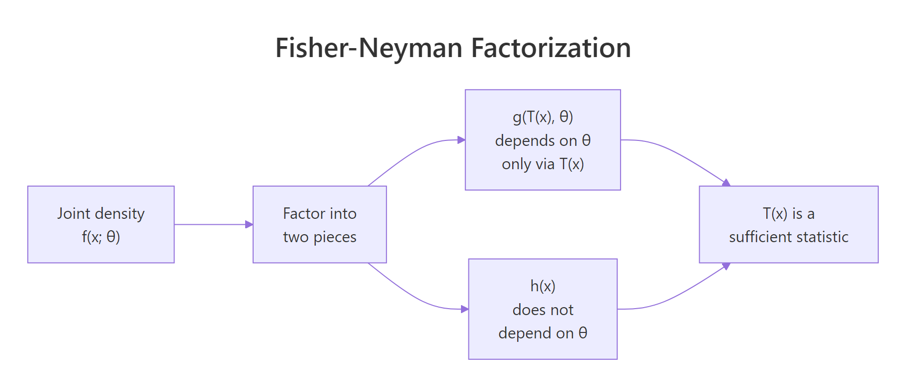
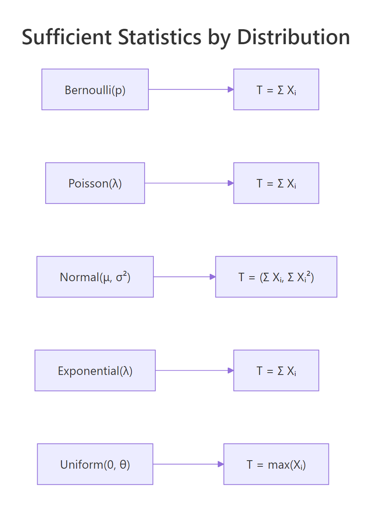
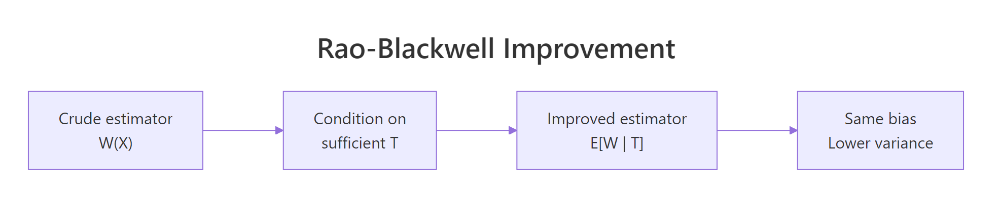

Sufficient Statistics in R: Fisher-Neyman Factorization with Examples
A sufficient statistic compresses your sample into the smallest summary that still carries every piece of information about an unknown parameter. The Fisher-Neyman factorization theorem gives you a one-line algebraic test for spotting one: split the joint density into a piece that touches the parameter only through your candidate statistic, and a piece that does not touch the parameter at all.
What does it mean for a statistic to be sufficient?
Imagine flipping a coin 10 times and recording 7 heads. To estimate the bias $p$, do you need the exact sequence (HHHHHHHTTT versus HTHHHHTHTH), or is the count of heads enough? A sufficient statistic is a function of the sample where the answer is the count is enough. Once you know it, the rest of the data carries no extra information about $p$.
Below we build two Bernoulli samples that look very different cell-by-cell yet share the same total, then evaluate the joint pmf at three values of $p$ and watch the numbers come out identical.
The two samples have wildly different orderings, but the likelihood numbers are byte-for-byte identical at every $p$. That is what "sufficient" means in practice: once you record sum(x), the rest of the sample is statistical noise as far as $p$ is concerned. The MLE (the $p$ that maximises the likelihood) is the same, every confidence interval based on the likelihood is the same, and any estimator built from the data alone could be replaced with one built from the count.
We can see this even more vividly by tracing the likelihood across a fine grid of $p$. Two curves, one per sample, plotted on the same axes, must overlap perfectly.
The thick blue line is plotted first; the dashed red line lies exactly on top of it. The peak sits at $p = 0.7 = 7/10$, the MLE for both samples. Because the two curves are identical functions of $p$, every inference about $p$ that you could draw from sample_a is the same as what you would draw from sample_b.
The formal definition makes this precise: a statistic $T(X)$ is sufficient for $\theta$ if the conditional distribution of the data $X$ given $T(X) = t$ does not depend on $\theta$. Once you know $T$, the parameter has nothing more to tell you about how the rest of the sample was generated. The trouble is that this conditional-distribution definition is hard to verify directly. Fisher and Neyman gave us a much friendlier test.
Try it: Build two Bernoulli vectors of length 12 that share the same sum $T = 5$, then verify their likelihoods agree at $p = 0.4$.
Click to reveal solution
Explanation: Both samples have $T = 5$ ones, so the joint pmf reduces to $0.4^5 \cdot 0.6^7 = 0.000508$ for both, regardless of which positions hold the ones.
How does the Fisher-Neyman factorization theorem work?
The Fisher-Neyman factorization theorem turns the awkward conditional-distribution test into a piece of algebra. It says: $T(X)$ is sufficient for $\theta$ if and only if the joint density factors as
$$f(x; \theta) = g\big(T(x), \theta\big) \cdot h(x)$$
Where:
- $g(T(x), \theta)$ depends on the data only through $T(x)$ and may also depend on $\theta$
- $h(x)$ may depend on the data however it likes but cannot depend on $\theta$
If you can rewrite the joint density that way, you have a sufficient statistic for free. If you cannot, no candidate $T$ on the table works.

Figure 1: The Fisher-Neyman factorization splits the joint density into a parameter-bearing piece that depends on data only via T(x), and a parameter-free piece.
Let us walk through the Bernoulli case carefully so the algebra clicks. For a single Bernoulli observation, $f(x; p) = p^x (1-p)^{1-x}$ for $x \in \{0, 1\}$. Multiplying over $n$ independent observations,
$$f(x_1, \ldots, x_n; p) = \prod_{i=1}^{n} p^{x_i} (1-p)^{1-x_i} = p^{\sum x_i} (1-p)^{n - \sum x_i}$$
Let $T(x) = \sum x_i$. The joint pmf collapses to $p^{T(x)} (1-p)^{n - T(x)}$, which depends on $x$ only through $T$. So we set $g(T, p) = p^T (1-p)^{n - T}$ and $h(x) = 1$. Factorization complete; $T = \sum x_i$ is sufficient.
We can verify this numerically. Pick a value of $p$, compute the joint pmf the long way (with dbinom over the sample), then compute it from the factorization, and check the two numbers match.
Both approaches give $0.4^7 \cdot 0.6^3 = 0.0003538944$. The factorization is not an approximation; it is an exact algebraic rewrite. Whatever the joint pmf was, we can read it off in two pieces, and the data piece $T$ is whichever sum, max, or product happens to absorb every appearance of the parameter.
The same recipe handles Poisson, exponential, normal (with one parameter), gamma, and so on. The next section runs the algebra for three more standard distributions and verifies each one in R.
Try it: Pick $p = 0.65$ and a fresh Bernoulli sample of length 8. Verify that dbinom(...) over the sample equals $p^T (1-p)^{n - T}$.
Click to reveal solution
Explanation: The joint pmf $0.65^5 \cdot 0.35^3 = 0.01115225$. Both forms compute it.
How do you find sufficient statistics for common distributions?
Three of the five most common one-parameter distributions admit the same sufficient statistic: the sum. The reason they share this answer is that all three live in the exponential family with $T(x) = x$. Working through Poisson, normal (mean unknown, variance known), and exponential side by side reveals the pattern.

Figure 2: Sufficient statistics for the most common one-parameter distributions.
For a Poisson sample with rate $\lambda$, the joint pmf is $\prod_i e^{-\lambda} \lambda^{x_i} / x_i! = e^{-n\lambda} \lambda^{\sum x_i} / \prod_i x_i!$. The parameter-bearing block $g(T, \lambda) = e^{-n\lambda} \lambda^T$ depends on the data only through $T = \sum x_i$. The remainder $h(x) = 1 / \prod_i x_i!$ is parameter-free. So $T = \sum x_i$ is sufficient for $\lambda$.
This is exactly the same conclusion the conditional-distribution definition gives, and we verify it numerically the same way: pick two Poisson samples with the same sum, compute the likelihood across a grid of $\lambda$, and compare. For Poisson the likelihoods will be proportional rather than equal (because $h(x)$ depends on the data through $\prod x_i!$), but the proportionality constant will not depend on $\lambda$.
The ratio is $7$ everywhere. That constant is exactly $h(x_a) / h(x_b) = \prod x_b! / \prod x_a! = 241920 / 34560 = 7$. The two likelihood curves have identical shape; one is just seven times taller than the other. Plotting them after dividing by their respective maxima gives two curves that lie exactly on top of each other.
The normal distribution with known variance follows the same script. The single-observation density is $f(x; \mu) = (2\pi\sigma^2)^{-1/2} \exp\{-(x-\mu)^2 / (2\sigma^2)\}$. Expanding the square in the exponent gives $-(x^2 - 2\mu x + \mu^2)/(2\sigma^2)$. Across an iid sample, the only piece of the exponent that involves $\mu$ is $\mu \sum x_i$, so $T = \sum x_i$ (or equivalently $\bar{x}$) is sufficient for $\mu$.
Same outcome. The constant ratio $2.117$ equals $\exp\{(\sum x_b^2 - \sum x_a^2)/(2\sigma^2)\} = \exp(0.75)$, a function of the data alone. The shape of the likelihood, the location of the MLE, the curvature, and every other parameter-relevant feature are identical between the two samples.
The exponential distribution closes out the trio. With density $f(x; \lambda) = \lambda e^{-\lambda x}$ for $x \geq 0$, the joint density across an iid sample is $\lambda^n e^{-\lambda \sum x_i}$. Both pieces depend on $\lambda$ together with $T = \sum x_i$, and $h(x) = 1$. Two exponential samples with the same total give exactly equal joint densities at every rate.
Ratio is exactly $1$ everywhere. The exponential is the cleanest case: its $h(x) = 1$ (no factorial-like clutter), so the likelihoods do not just have the same shape, they have the same numerical value point by point.
Try it: The Geometric distribution counts trials until first success: $P(X = x) = (1-p)^{x-1} p$ for $x = 1, 2, \ldots$. Show by factorization that $T = \sum x_i$ is sufficient for $p$, then verify numerically with two samples sharing the same sum.
Click to reveal solution
Explanation: The joint pmf is $p^n (1-p)^{T - n}$, which depends on the data only through $T$. Two samples sharing $T = 10$ give the same likelihood at every $p$.
Why is the maximum sufficient for the uniform distribution?
The uniform distribution breaks the pattern, and the break is instructive. The density is $f(x; \theta) = 1/\theta$ for $0 \leq x \leq \theta$ and $0$ otherwise. The support depends on $\theta$. Writing the joint density requires an indicator function that says "every observation must lie in $[0, \theta]$":
$$f(x_1, \ldots, x_n; \theta) = \frac{1}{\theta^n} \cdot \mathbb{1}\!\left\{\max_i x_i \leq \theta\right\}$$
The indicator is the only piece that depends on the data once we condition on $\theta$, and it depends on the data only through $\max_i x_i$. So $T(x) = \max_i x_i$ is sufficient for $\theta$. The sum is not sufficient here. The maximum captures everything because, for the uniform model, knowing whether a value as large as $\theta$ ever occurred is what tells you about $\theta$.
We can see the resulting likelihood directly. As a function of $\theta$, the likelihood is zero whenever $\theta$ falls below max(x) (the data could not have come from such a uniform), then drops as $1/\theta^n$ above the max.
The plot has a hard kink at $\theta = M$. To the left, the likelihood is exactly zero (no value of $\theta$ smaller than the largest observation could have produced the data). To the right, the likelihood decays like $1/\theta^{20}$, slowly at first and faster later. The MLE is at $\hat\theta = M$, exactly the sample maximum. No other statistic of the data, not the mean, not the median, not the range, can recover this answer; only the max.
The lesson is that the sufficient statistic is whatever the parameter-bearing piece of the joint density depends on, and that piece can be quite different from a sum. In the uniform case, the joint density is constant on the support and the only $\theta$-dependence comes from the support boundary. Sums lose information; the max preserves all of it.
Try it: Generate a Uniform$(0, 8)$ sample of size $50$ and find the MLE for $\theta$ by inspecting where the likelihood kink falls.
Click to reveal solution
Explanation: With $n = 50$ draws from a uniform on $[0, 8]$, the largest one will sit close to (but below) $8$. The MLE $\hat\theta = M$ is the sample maximum, which is a sufficient statistic for $\theta$. The kink in the likelihood always sits exactly at the sample max regardless of seed.
What is a minimal sufficient statistic and how does Rao-Blackwell improve estimators?
Plenty of sufficient statistics exist for any model. The full sample $X$ is trivially sufficient, since the conditional distribution of $X$ given $X$ is degenerate. So is any one-to-one function of a sufficient statistic. The interesting question is: what is the smallest sufficient summary?
A statistic $T$ is minimal sufficient if $T$ is sufficient and every other sufficient statistic is a function of $T$. Practically, $T$ is the most aggressive lossless compression possible. The Lehmann-Scheffé recipe finds it: $T(x) = T(y)$ whenever the ratio $f(x; \theta) / f(y; \theta)$ does not depend on $\theta$. For Bernoulli, that ratio is $p^{T(x) - T(y)} (1-p)^{[n - T(x)] - [n - T(y)]}$, free of $p$ exactly when $T(x) = T(y)$. So the sum is minimal sufficient for Bernoulli.
The deeper reason to care about minimal sufficient statistics is that they let you build better estimators. The Rao-Blackwell theorem says: if $W(X)$ is any unbiased estimator of $g(\theta)$ and $T$ is sufficient for $\theta$, then $W^* = E[W \mid T]$ is also unbiased for $g(\theta)$ and has variance no larger than $W$.

Figure 3: Rao-Blackwell takes any unbiased estimator and conditions on a sufficient statistic to produce an estimator with the same bias and lower variance.
The classic illustration uses Poisson. Suppose we want to estimate $g(\lambda) = P(X = 0) = e^{-\lambda}$ from an iid sample of size $n$. A crude unbiased estimator is $W = \mathbb{1}\{X_1 = 0\}$, the indicator that the first observation was zero. It is unbiased because $E[W] = P(X_1 = 0) = e^{-\lambda}$. But it ignores $X_2, \ldots, X_n$ entirely.
The sufficient statistic is $T = \sum X_i$. Conditional on $T = t$, the distribution of $X_1$ is $\text{Binomial}(t, 1/n)$ (a known combinatorial fact for sums of iid Poissons). So
$$E[W \mid T = t] = P(X_1 = 0 \mid T = t) = \left(\frac{n-1}{n}\right)^{t}$$
We compare both estimators by Monte Carlo. Same bias, much lower variance, every time.
The two estimators target the same number ($e^{-2} \approx 0.1353$) and both Monte Carlo means are within sampling error. Their variances tell a different story: the crude indicator has variance about $0.117$ (the theoretical $p(1-p)$ with $p = 0.1353$), while the Rao-Blackwell version has variance about $0.009$. Conditioning on the sufficient statistic shrinks the variance by a factor of roughly $13$ at no cost in bias.
The improvement is not arbitrary. The Lehmann-Scheffé theorem strengthens this further: if $T$ is complete and sufficient, then $E[W \mid T]$ is the unique uniformly minimum-variance unbiased estimator (UMVUE). Completeness rules out the existence of a non-trivial unbiased estimator of zero based on $T$; loosely, it means $T$ does not waste any information. For exponential-family distributions in canonical form, the natural sufficient statistic is automatically complete.
Try it: Repeat the Rao-Blackwell simulation with $n = 20$ instead of $n = 5$. By how much does the variance ratio between the two estimators change?
Click to reveal solution
The crude estimator only ever uses $X_1$, so its variance stays at $p(1 - p) \approx 0.117$ regardless of $n$. The Rao-Blackwell estimator pools information across all $n$ observations, so its variance shrinks roughly like $1/n$. With $n = 20$ the ratio of variances jumps from about $13$ to about $50$ or more. The bigger the sample, the more information the crude indicator throws away.
Explanation: Doubling $n$ does nothing for the crude estimator (which still ignores everything past $X_1$), but it tightens the conditional expectation by averaging over more data.
What is the exponential family connection?
Every distribution we have looked at, except the uniform, fits a single template called the exponential family. Writing it down crystallises why sums keep showing up as sufficient statistics.
A distribution is in the exponential family in canonical form if its density can be written
$$f(x; \theta) = h(x) \exp\big\{\eta(\theta) \cdot T(x) - A(\theta)\big\}$$
Where:
- $\eta(\theta)$ is the natural parameter (a known function of $\theta$)
- $T(x)$ is the natural sufficient statistic (a known function of the data)
- $A(\theta)$ is the log-partition function (a known function of $\theta$ ensuring the density integrates to $1$)
- $h(x)$ is a base measure that does not depend on $\theta$
Reading off this template, the Fisher-Neyman factorization is automatic: $g(T, \theta) = \exp\{\eta(\theta) T - A(\theta)\}$ depends on data only through $T$, and $h(x)$ is parameter-free. So $T(x)$ is sufficient. For an iid sample, the joint density's exponent becomes $\eta(\theta) \sum_i T(x_i) - n A(\theta)$, so the sample-level sufficient statistic is $\sum_i T(x_i)$.
For Poisson, the pmf $e^{-\lambda} \lambda^x / x!$ rewrites as $(1/x!) \exp\{x \log\lambda - \lambda\}$. So $\eta(\lambda) = \log\lambda$, $T(x) = x$, $A(\lambda) = \lambda$, and $h(x) = 1/x!$. Sample-level sufficient statistic is $\sum X_i$, exactly as we derived.
The canonical form turns "find a sufficient statistic" into "stare at the exponent and read off whatever multiplies the natural parameter". Once you internalise this, Bernoulli, Poisson, exponential, gamma, beta, normal, multinomial, and most other workhorses give up their sufficient statistics in seconds.
Try it: Write the Bernoulli pmf in canonical form by identifying $\eta(p)$, $T(x)$, $A(p)$, and $h(x)$. Hint: $p^x (1-p)^{1-x} = \exp\{x \log[p/(1-p)] + \log(1-p)\}$.
Click to reveal solution
Explanation: The Bernoulli is in the exponential family with logit as natural parameter. For an iid sample, $T(x) = x$ leads directly to $\sum x_i$ as the sample-level sufficient statistic, matching what we found by direct factorization in section 2.
Practice Exercises
Exercise 1: Verify sufficiency for the Geometric distribution
Generate two Geometric samples of size $n = 6$ that share the same total (e.g., $T = 18$). Compute their likelihoods at $p = 0.25$ and confirm they agree to machine precision. The Geometric pmf in R uses dgeom(x - 1, p) because R's dgeom counts failures rather than trials.
Click to reveal solution
Explanation: The Geometric joint pmf factors as $p^n (1-p)^{T - n}$, depending on the data only through $T = \sum x_i$. Two samples with the same total give identical likelihoods at every $p$.
Exercise 2: Rao-Blackwell variance reduction at large lambda
The Rao-Blackwell improvement depends on $\lambda$ (and hence on $p = e^{-\lambda}$). Run the same simulation as in section 5 with $\lambda = 5$ instead of $\lambda = 2$ and a sample size $n = 5$. Compute both variances and the variance ratio. Compare to what you got at $\lambda = 2$.
Click to reveal solution
Explanation: At $\lambda = 5$, $P(X=0) = e^{-5} \approx 0.0067$ is very small. The crude indicator has variance $p(1-p) \approx 0.0067$, and the Rao-Blackwell version is again about $13$ times smaller. The variance ratio is roughly stable across $\lambda$ for this $n$, which is the exact-iid analogue of the Cramér-Rao bound on relative efficiency.
Exercise 3: Joint sufficient statistic for normal with both parameters unknown
When both $\mu$ and $\sigma^2$ are unknown, the joint sufficient statistic for the normal is two-dimensional: $(\sum x_i, \sum x_i^2)$. Build two normal samples that share both $\sum x_i$ and $\sum x_i^2$. Pick a grid of $(\mu, \sigma^2)$ values, compute the joint likelihood for each sample, and verify that the two likelihood surfaces are proportional with constant ratio.
Click to reveal solution
Constructing exact matches is most easily done by permutation. Any reordering of my_norm_a shares both the sum and the sum of squares.
Explanation: Permutations of the same multiset preserve every symmetric statistic, including both $\sum x_i$ and $\sum x_i^2$. Since $(\sum x_i, \sum x_i^2)$ is the joint sufficient statistic, the ratio of joint densities is identically $1$ over the entire $(\mu, \sigma)$ grid. For a more interesting test, build two samples with matching sums and sum-of-squares but different multisets (this is harder; one approach is to solve a small system of equations).
Complete Example
Putting it all together: a short Poisson workflow that uses only the sufficient statistic and arrives at exactly the same inference you would have gotten from the full data.
We generate $n = 30$ Poisson observations with $\lambda = 4$, compute $T = \sum X_i$, and use $T$ for everything that follows: the MLE for $\lambda$ via the score equation, a 95% confidence interval based on $T$'s sampling distribution, and a Rao-Blackwellised estimate of $P(X = 0) = e^{-\lambda}$. Throwing the original sample away changes none of the answers.
The estimate $\hat\lambda = 4.133$ is close to the true $\lambda = 4$, and the 95% interval $(3.41, 4.86)$ comfortably covers it. The Rao-Blackwell estimate of $P(X = 0)$ is $0.0153$ versus the true $0.0183$. Every quantity above was computed from $T$ and $n$ alone, demonstrating in code what the theory promises: the sufficient statistic carries every drop of $\lambda$-relevant information.
Summary
| Concept | What it gives you |
|---|---|
| Sufficient statistic | A function $T(X)$ that captures all parameter information; the rest of the sample is noise. |
| Fisher-Neyman factorization | Algebraic test: $f(x; \theta) = g(T(x), \theta) \cdot h(x)$. |
| Bernoulli, Poisson, exponential | Sufficient statistic is $T = \sum X_i$. |
| Normal, $\mu$ unknown, $\sigma^2$ known | $T = \sum X_i$ (or $\bar{x}$). |
| Normal, both unknown | Joint sufficient statistic $(\sum X_i, \sum X_i^2)$. |
| Uniform on $[0, \theta]$ | $T = \max X_i$ (parameter-dependent support). |
| Minimal sufficient | Smallest possible compression; every other sufficient statistic is a function of it. |
| Rao-Blackwell | Conditioning any unbiased estimator on a sufficient statistic preserves bias and shrinks variance. |
| Exponential family canonical form | $T(x)$ is whatever multiplies $\eta(\theta)$ in the exponent. |
The single most useful takeaway is operational: when you face a new model, write down the joint density, factor it, and read off the sufficient statistic. That one move sets up MLEs, Cramér-Rao bounds, UMVUEs, Bayesian posteriors, and most other parametric machinery.
References
- Fisher, R.A. (1922). On the mathematical foundations of theoretical statistics. Philosophical Transactions of the Royal Society A, 222, 309-368.
- Neyman, J. (1935). Sur un teorema concernente le cosiddette statistiche sufficienti. Giornale dell'Istituto Italiano degli Attuari, 6, 320-334.
- Casella, G. and Berger, R. (2002). Statistical Inference, 2nd edition. Duxbury. Chapter 6: Principles of Data Reduction.
- Lehmann, E.L. and Casella, G. (1998). Theory of Point Estimation, 2nd edition. Springer. Chapter 1: Preparations.
- Penn State STAT 415: Lesson 24, Sufficient Statistics. Link
- Wikipedia: Sufficient statistic. Link
- Wikipedia: Exponential family. Link
- Watkins, J. An Introduction to the Science of Statistics, Chapter on Sufficiency. Link
Continue Learning
- Exponential Family Distributions in R: a fuller tour of canonical form, natural parameters, and conjugate priors across discrete and continuous models.
- Maximum Likelihood Estimation in R: the likelihood depends on the data only through the sufficient statistic, which makes MLEs particularly clean for exponential family members.
- Point Estimation in R: bias, variance, and MSE for the estimators a sufficient statistic produces.